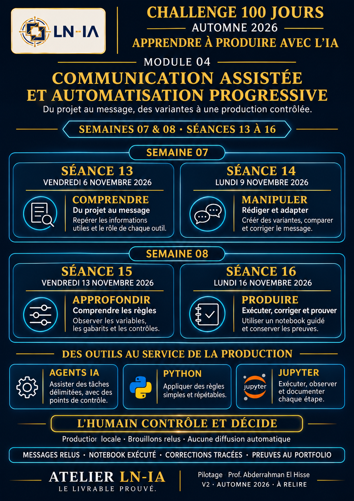
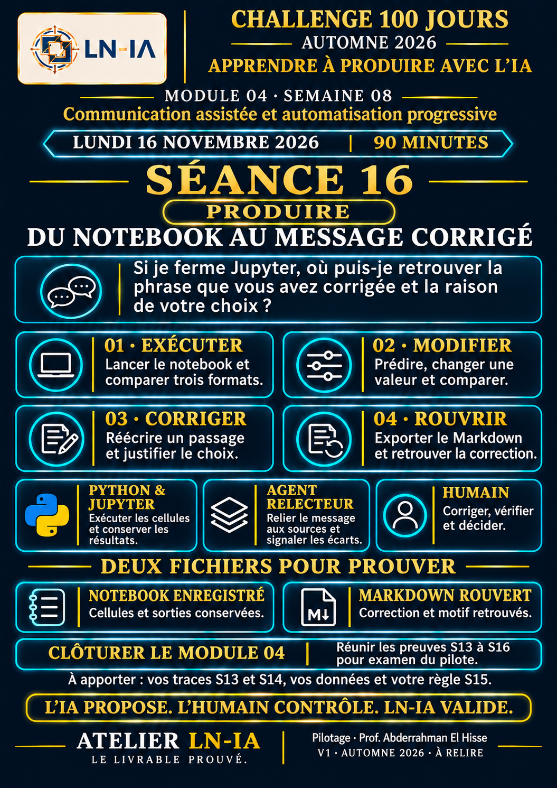

Comprendre
Repérer les faits dans le guide S12 et expliquer une décision.
Choisissez un passage de votre guide S12. Présentez-le à un lecteur précis et montrez ce que vous avez vérifié.
OUVERTURE DE LA SÉANCE
« Si votre lecteur ne voyait que trois lignes de votre guide S12, que devrait-il comprendre et quelle action pourrait-il faire ensuite ? »
Explorer les six questions →SEMAINES 07 ET 08
Repérer les faits dans le guide S12 et expliquer une décision.
Comparer trois formulations et justifier une correction.
Tester une condition et en expliquer la limite.
Exécuter un notebook, corriger puis rouvrir l’export local.
Ouvrir une affiche en grand, la projeter ou la télécharger. Les objectifs de S14 à S16 préparent la suite du parcours.

Comprendre, manipuler, approfondir, produire. L’humain contrôle et décide.
PNG ↓
Relier chaque affirmation à sa source et justifier une correction.
PNG ↓
Comparer les tons direct, chaleureux et professionnel en conservant les faits et une action.
PNG ↓
Tester 400 et 401 caractères ; vérifier la fidélité dans la source.
PNG ↓
Exécuter, modifier, corriger, exporter et rouvrir pour retrouver la correction.
PNG ↓PROJECTION COLLECTIVE
Vingt-six diapositives : le parcours S13, les repères Python et Jupyter et les cinq affiches du Module 04. Ouvrez une diapositive ou démarrez au début.
Parcourez le support à votre rythme.
Une fois dans la présentation, utilisez les flèches gauche et droite. Échap ferme le mode projection.
AVANT LES OUTILS
Ouvrez chaque question. Comparez votre réponse à l’exemple construit pour un public de formateurs débutants.
Projet → informations utiles → message structuré → variantes adaptées → règles simples → production assistée → contrôle humain → livrable classé et prouvé.
Télécharger le document original DOCX ↓Le guide pratique « Produire avec l’IA sous responsabilité humaine », V2 à relire.
Des formateurs débutants qui relisent un support pédagogique produit avec l’IA.
Ils veulent savoir ce qui a été changé entre le premier brouillon et la copie corrigée.
Comparer une correction de fond et une correction de forme dans un journal avant/après.
Une seule réponse à la question « Souhaitez-vous voir un extrait du journal de corrections ? »
Par exemple, un courriel professionnel. Le groupe choisit le canal après le public et l’objectif.
RESPONSABILITÉS
Choisit le public, vérifie le passage, corrige le message et assume son choix.
Reformule le texte que vous lui donnez. Vous comparez ses propositions.
Reçoit une mission, peut choisir des outils autorisés et revient avec des éléments vérifiables.
Exécute les instructions écrites. Un gabarit assemble les champs et une condition teste la longueur.
Présente le texte, les cellules de code et les résultats. Le noyau Python exécute le code.
CAS FICTIF DU MODULE 03
Suivez cinq étapes à projeter. L’agent travaille sur le guide et son journal. Le candidat décide de la formulation qu’il peut justifier.
Une variable conserve une information ; un gabarit assemble les valeurs ; une condition teste une règle.
projet = "Mini-guide de révisions"
public = "les étudiants"
message = f"{projet} s’adresse à {public}."
print(message)Repérez les variables puis expliquez le résultat avec vos mots.
Télécharger le document original DOCX ↓Les guides Python et Jupyter sont en V1, à valider. En S16, conserver le notebook exécuté et rouvrir le Markdown exporté.
Télécharger le document original DOCX ↓EXPÉRIENCE DE LONGUEUR
La longueur ne permet pas de vérifier la vérité d’une promesse. Comparez le message à sa source.
PRATIQUE ACCOMPAGNÉE
Utilisez votre guide S12 sur votre poste ou le cas fictif de Samira. Conservez une information vérifiable, rédigez votre version et expliquez une décision.
Le premier lit son message. Le second demande « Où puis-je vérifier ce fait ? ». Inversez les rôles.
Samira a préparé un mini-guide pour des étudiants qui planifient leur semaine de révisions. Il contient un planning hebdomadaire et une liste de vérification. Elle peut proposer un aperçu. Comparez ce fait à la promesse « Vous doublerez vos notes ». Quelle phrase gardez-vous ?
SEPT MISSIONS À COPIER
Quatre missions de pratique et trois prompts maîtres V4. Précisez les fichiers disponibles, le résultat attendu et le moment où l’assistant doit rendre la main.
Ouvrez une copie des deux fichiers fictifs du pack dans votre environnement habituel. Limitez la mission à leur lecture, copiez le premier prompt et ouvrez vous-même chaque passage cité. Comparez le résultat au journal puis arrêtez la mission.
L’agent lecteur recherche une correction dans le dossier fictif. L’humain ouvre le passage cité.
Confier deux fichiers et demander deux faits avec leurs emplacements. Le candidat choisit son message.
Faire relever les différences entre trois variantes. Le candidat décide laquelle convient à son lecteur.
Faire suggérer une règle testable et un contre-exemple. Python mesure la longueur, le groupe vérifie le sens.
Comparer la sortie locale à sa source. Le candidat corrige puis rouvre le fichier exporté devant le pilote.
Travaille en lecture seule sur les deux fichiers fictifs guide-pratique-v2-a-relire.md et journal-corrections-v1-v2.md. Relève deux faits utiles à un formateur débutant. Pour chacun, donne le nom du fichier, la rubrique et un court extrait exact. Inscris « À VÉRIFIER » si la source manque. Ne modifie rien. Arrête-toi après le tableau.
À partir de la fiche fictive ci-dessous, propose deux messages courts pour un formateur débutant. Conserve les deux faits vérifiables et une action unique : « Souhaitez-vous voir un extrait du journal de corrections ? » Donne une version directe et une version professionnelle. Signale les inconnues à part. Statut des sorties : brouillons à relire. Fiche : le guide garde V1 et V2 et le journal explique une correction de formulation.
Compare les deux brouillons à la fiche source et au journal fournis. Pour chaque affirmation donne un passage qui l’étaye ou signale « absent de la source ». Vérifie qu’une seule action est demandée. Rends une liste courte de points à décider par le candidat. Lecture seule. Termine après le relevé, sans valider ni diffuser.
Pose-moi trois questions, une à la fois : quelle phrase du guide ai-je utilisée, quelle formulation ai-je changée, pourquoi est-ce que j’assume ce choix ? Attends mes réponses. Propose ensuite une trame de trace en Markdown, en laissant la décision du pilote en attente.
Tu es un assistant pédagogique de l’Atelier LN-IA. Explique à un public non programmeur le processus suivant : PROJET → INFORMATIONS UTILES → MESSAGE STRUCTURÉ → VARIANTES ADAPTÉES → RÈGLES SIMPLES → PRODUCTION ASSISTÉE → CONTRÔLE HUMAIN → LIVRABLE CLASSÉ ET PROUVÉ. Utilise des phrases courtes. Distingue clairement ce que fait l’IA, ce que fait Python, ce que montre Jupyter et ce que décide l’humain. N’utilise aucune donnée personnelle. Ne propose aucun envoi automatique. Termine par six questions de compréhension et une trace à produire.
Pose au candidat six questions courtes sur son projet, son public, son besoin, son bénéfice, l’action attendue et le canal. Après chaque réponse, indique seulement : compris, à préciser, ou pose une question de relance. Ne réponds pas à sa place.
Analyse le contenu fourni. Vérifie la cohérence avec le Module 04, l’accessibilité du vocabulaire, la distinction entre IA, Python et Jupyter, la place du contrôle humain, l’absence de données sensibles et l’absence d’envoi automatique. Termine par : points conformes, points à corriger, simplifications recommandées, statut À RELIRE ou À CORRIGER.
MÉMORISATION ACTIVE
Répondez à voix haute avant de retourner la carte. Utilisez-les à deux pour préparer la restitution.
VÉRIFICATION FORMATIVE
Choisissez une réponse par situation. L’explication vous aidera à identifier le point à reprendre avant S14.
REVUE AVANT S14
Préparez la revue en cochant ce que vous êtes capable de montrer à votre partenaire ou au formateur.
AUTOÉVALUATION
DÉCISION DU PILOTE
À compléter si le passage ou l’explication manque.
À revoir si l’élément examiné contient un écart.
À valider après observation des pièces requises. Le pilote peut ensuite prononcer VALIDÉ et dater sa décision.
Le score du quiz et les cases cochées servent à préparer la revue.
PREUVE DE COMPRÉHENSION
Reliez la source, le message et votre correction. Les fichiers téléchargés peuvent être relus dans un éditeur de texte.
preuve-13-processus-communication-assistee01 / TRACE PERSONNELLE
Complétez les champs de l’atelier puis rouvrez le fichier téléchargé. Rangez-le dans 04-communication/.
02 / INDEX DU PORTFOLIO
Ajoutez l’entrée exportée à votre index 07-portfolio/preuves-module-04.md. Préservez les entrées des séances précédentes.
Le modèle laisse la décision humaine en attente. L’export d’un fichier vide reste une trame à compléter.
SUPPORTS DE LA SÉANCE
Les documents de cette liste sont inclus dans le pack. Utilisez le PDF pour projeter ou imprimer, et les fichiers modifiables pour préparer votre intervention.
PROMPTS MAÎTRES ET EXPLICATIFS
Prompts encadrés pour la Séance 13
Séance
13 — COMPRENDRE
Version
V4 — VALIDÉE POUR USAGE PÉDAGOGIQUE
Code document
S13-M04-04
1. Prompt maître — Présenter le processus global
PROMPTTu es un assistant pédagogique de l’Atelier LN-IA. Explique à un public non programmeur le processus suivant : PROJET → INFORMATIONS UTILES → MESSAGE STRUCTURÉ → VARIANTES ADAPTÉES → RÈGLES SIMPLES → PRODUCTION ASSISTÉE → CONTRÔLE HUMAIN → LIVRABLE CLASSÉ ET PROUVÉ. Utilise des phrases courtes. Distingue clairement ce que fait l’IA, ce que fait Python, ce que montre Jupyter et ce que décide l’humain. N’utilise aucune donnée personnelle. Ne propose aucun envoi automatique. Termine par six questions de compréhension et une trace à produire.
2. Prompt — Reformulation socratique
PROMPTPose au candidat six questions courtes sur son projet, son public, son besoin, son bénéfice, l’action attendue et le canal. Après chaque réponse, indique seulement : compris, à préciser, ou pose une question de relance. Ne réponds pas à sa place.
3. Prompt — Contrôle qualité
PROMPTAnalyse le contenu fourni. Vérifie la cohérence avec le Module 04, l’accessibilité du vocabulaire, la distinction entre IA, Python et Jupyter, la place du contrôle humain, l’absence de données sensibles et l’absence d’envoi automatique. Termine par : points conformes, points à corriger, simplifications recommandées, statut À RELIRE ou À CORRIGER.
4. Règles d’usage
Toujours relire la réponse.
Ne pas copier une sortie sans correction.
Ne pas intégrer de données sensibles.
Ne pas déclarer une production validée sans décision humaine.
GUIDE PYTHON — MODULE 04
Communication assistée et automatisation progressive
Comprendre Python sans complexité • Observer • Manipuler • Contrôler • Prouver
Projet
CHALLENGE 100 JOURS — FORMATION IA PRATIQUE
Cadre
LAB-NUMÉRIQUE-IA — Module 04 — Séance 13
Statut
V1 — À VALIDER PAR LE PILOTE HUMAIN
Sommaire opérationnel
Pourquoi Python dans le Module 04 ?
Ce que Python est — et ce qu’il n’est pas
Le modèle LN-IA : information → instruction → résultat
Les notions essentielles à connaître
Exemple guidé : du projet au message
Python et Jupyter : deux rôles complémentaires
Automatisation légère et contrôlée
Sécurité, limites et responsabilité humaine
Questions fréquentes des candidats
Activités pédagogiques de la Séance 13
Préparation de la Séance 14 — MANIPULER
Livrables, preuves et grille de validation
MESSAGE CENTRALPython n’est pas présenté comme un cours de programmation avancée. Il est présenté comme un moteur qui reçoit des informations, applique une règle simple et affiche un résultat. L’humain observe, corrige et décide.
1. Pourquoi Python dans le Module 04 ?
Le Module 04 transforme les informations d’un projet en communications adaptées. Python intervient lorsque le candidat doit appliquer une règle simple, répéter une transformation ou assembler plusieurs éléments sans perdre le contrôle du processus.
Dans la Séance 13, l’objectif n’est pas d’apprendre à programmer. Le candidat découvre la logique générale : une information entre, une instruction agit, un résultat apparaît, puis l’humain vérifie.
INFORMATIONS
INSTRUCTIONS
RÈGLE SIMPLE
RÉSULTAT
CONTRÔLE HUMAIN
Python exécute. Jupyter montre. L’humain contrôle. Le livrable prouve.
2. Ce que Python est — et ce qu’il n’est pas
CE QUE PYTHON EST
CE QUE PYTHON N’EST PAS AUJOURD’HUI
✓ Un langage qui exécute des instructions.
✕ Pas un cours de programmation avancée.
✓ Un moteur simple pour transformer des informations.
✕ Pas une obligation de mémoriser la syntaxe.
✓ Un outil pour appliquer une règle ou un gabarit.
✕ Pas un outil d’envoi automatique.
✓ Un support d’automatisation locale et contrôlée.
✕ Pas un remplaçant du jugement humain.
3. Le modèle LN-IA : information → instruction → résultat
Python est introduit comme une chaîne de transformation lisible. Le candidat doit pouvoir raconter ce qui se passe avec ses propres mots.
Étape
Question à poser
Rôle dans le processus
1. Information
Quelles données sont utiles ?
Fournir les éléments vrais du projet.
2. Variable
Comment nommer chaque élément ?
Conserver une information dans une boîte nommée.
3. Instruction
Que doit faire la machine ?
Exécuter une action précise.
4. Gabarit
Comment assembler les éléments ?
Réutiliser une structure commune.
5. Résultat
Qu’est-ce qui est affiché ?
Produire une sortie observable.
Point de contrôle : un résultat automatique reste un brouillon tant qu’il n’a pas été relu et validé.
4. Les notions essentielles à connaître
Notion
Explication accessible
Exemple
Variable
Une boîte nommée qui conserve une information.
public = "les étudiants"
Instruction
Une action demandée à la machine.
print(message)
Gabarit
Une structure réutilisable avec des emplacements.
f"{projet} s’adresse à {public}."
Condition
Une règle du type “si… alors…”.
if len(message) > 400:
Résultat
La sortie produite par le programme.
Texte affiché dans Jupyter
Brouillon
Une version provisoire à relire.
Statut : À RELIRE
5. Exemple guidé : du projet au message
Exemple fil rouge : un mini-guide destiné aux étudiants. Le but est d’observer la logique, pas de mémoriser le code.
projet = "Mini-guide de révisions"public = "les étudiants"action = "Répondez GUIDE pour en savoir plus."message = f"{projet} s’adresse à {public}. {action}"print(message)
Lecture en langage naturel :
projet, public et action : sont des informations conservées dans des variables.
message = … : assemble les informations dans un gabarit.
print(message) : affiche le résultat.
relecture humaine : vérifie le sens, le ton et la conformité.
6. Python et Jupyter : deux rôles complémentaires
Élément
Rôle
Image mentale
Python
Exécute les instructions et produit un résultat.
Le moteur
Jupyter
Montre le code, les étapes, les résultats et les corrections.
Le cahier de laboratoire
Humain
Choisit, observe, corrige, valide et classe.
Le pilote
Organisation type d’un notebook guidé :
Cellule 1 — Mes informations
Cellule 2 — Mon message source
Cellule 3 — Mes variantes
Cellule 4 — Mes contrôles
Cellule 5 — Ma correction humaine
Cellule 6 — Mon enregistrement local
7. Automatisation légère et contrôlée
Dans le Module 04, automatiser signifie appliquer une règle simple plusieurs fois dans un environnement local. Cela ne signifie pas diffuser ou publier automatiquement.
AUTOMATISATION ACCEPTÉE
AUTOMATISATION EXCLUE
✓ Assembler un message à partir de variables.
✕ Envoyer des messages à des contacts réels.
✓ Comparer plusieurs variantes.
✕ Publier sans validation humaine.
✓ Contrôler une longueur indicative.
✕ Connecter une API ou un compte.
✓ Enregistrer localement un brouillon.
✕ Utiliser des données sensibles.
Exemple de condition simple :
if len(message) > 400: print("À raccourcir")else: print("Longueur acceptable — relecture humaine nécessaire")
La machine vérifie une condition. Elle affiche une indication. L’humain décide de la correction.
8. Sécurité, limites et responsabilité humaine
☐ Aucune API connectée
☐ Aucun jeton ou mot de passe saisi
☐ Aucune liste réelle de contacts utilisée
☐ Aucune donnée sensible intégrée
☐ Aucun message envoyé automatiquement
☐ Aucune publication déclenchée automatiquement
☐ Chaque sortie reste BROUILLON ou À RELIRE
☐ La validation finale appartient au pilote humain
RÈGLE LN-IA : le code peut aider à produire. Il ne peut ni assumer la responsabilité du message ni remplacer la décision humaine.
9. Questions fréquentes des candidats
Faut-il déjà savoir programmer ?
Non. La Séance 13 demande de comprendre une logique simple et de lire un exemple court.
Dois-je mémoriser le code ?
Non. Le candidat observe le lien entre information, instruction et résultat.
Python remplace-t-il ChatGPT ?
Non. L’IA aide à formuler. Python applique des règles définies.
Pourquoi utiliser Python pour un message ?
Pour montrer comment des informations peuvent être assemblées, contrôlées et répétées avec méthode.
Jupyter est-il un langage ?
Non. Jupyter est un environnement de travail qui présente le code et les résultats cellule par cellule.
Python peut-il envoyer les messages ?
Techniquement cela existe, mais ce n’est ni l’objectif ni une pratique autorisée dans ce module.
Que faire si une erreur apparaît ?
Lire le message, ne pas paniquer, demander de l’aide et modifier seulement la cellule concernée.
Le résultat produit est-il final ?
Non. Il reste un brouillon tant qu’il n’est pas relu, corrigé et validé.
Peut-on utiliser des données personnelles ?
Non pour les démonstrations. Le travail doit rester local et utiliser des informations non sensibles.
À quoi Python servira-t-il en Séance 16 ?
À exécuter un notebook guidé, produire des variantes, observer les contrôles et enregistrer une sortie locale.
10. Activités pédagogiques de la Séance 13
Activité 1 — Reformuler le rôle de Python — Chaque candidat complète : “Python reçoit…, applique…, affiche…, puis l’humain…”
Activité 2 — Repérer les variables — Dans l’exemple, identifier projet, public et action.
Activité 3 — Lire une ligne de code — Traduire print(message) en langage naturel.
Activité 4 — Distinguer outil et décision — Classer les actions entre Python, Jupyter et humain.
Activité 5 — Vérifier la sécurité — Repérer ce qui serait interdit : donnée sensible, mot de passe, envoi automatique.
Trace de compréhension à compléter
☐ J’explique Python avec des mots simples.
☐ Je reconnais une variable et un gabarit.
☐ Je lis un exemple très court.
☐ Je comprends le lien information → instruction → résultat.
☐ Je sais pourquoi le contrôle humain reste central.
11. Préparation de la Séance 14 — MANIPULER
La Séance 14 transforme la compréhension en manipulation guidée. Le candidat ne programme pas encore un système complet. Il prépare les informations de son projet et construit des messages avec méthode.
À PRÉPARER
À ÉVITER
RÉSULTAT ATTENDU
Informations non sensibles
Données personnelles
Un message source
Un public précis
Promesses excessives
Deux ou trois variantes
Un objectif clair
Texte trop long
Une comparaison
Une action possible
Copie automatique
Une correction humaine
Une version humaine courte
Envoi réel
Un fichier classé
12. Livrables, preuves et grille de validation
Élément
Chemin / nom
Statut
Trace séance 13
04-communication/comprendre-processus-communication.md
À RELIRE
Preuve séance 13
preuve-13-processus-communication-assistee
À VALIDER
Livrable séance 14
04-communication/message-court-projet.md
À PRODUIRE
Preuve séance 14
preuve-14-message-projet-et-variantes
À PRODUIRE
Notebook séance 16
05-automatisation/communication-assistee.ipynb
À PRÉPARER
Grille de validation rapide
Critère
Indicateur
État
Compréhension
Le candidat explique le rôle de Python avec des mots simples.
☐ À compléter ☐ À revoir ☐ À valider
Lecture
Il identifie une variable, une instruction et un résultat.
☐ À compléter ☐ À revoir ☐ À valider
Distinction
Il différencie Python, Jupyter, IA et contrôle humain.
☐ À compléter ☐ À revoir ☐ À valider
Sécurité
Il sait qu’aucun envoi automatique ni donnée sensible n’est autorisé.
☐ À compléter ☐ À revoir ☐ À valider
Preuve
Il complète et classe sa trace de compréhension.
☐ À compléter ☐ À revoir ☐ À valider
SYNTHÈSE FINALE
Python exécute des instructions simples.
Jupyter montre les étapes et les résultats.
L’IA aide à formuler et à comparer.
L’humain contrôle, corrige et décide.
Le livrable prouve.
V1 — À VALIDER PAR LE PILOTE HUMAIN
GUIDE SPÉCIAL JUPYTER — MODULE 04
CHALLENGE 100 JOURS — FORMATION IA PRATIQUEATELIER LN-IA — Séance 13
Titre : Présenter Jupyter sans complexité
Cadre : LAB-NUMÉRIQUE-IA
Module : Module 04 — Communication assistée et automatisation progressive
Séance : Séance 13 — COMPRENDRE
Statut : V1 — À VALIDER
Pilotage humain : Pr. Abderrahman EL HISSE
Affiche de référence :
1. Intention du guide
Ce guide a pour objectif d’expliquer simplement le rôle de Jupyter dans la Séance 13 du Module 04. Il ne s’agit pas de former les candidats à la programmation avancée, mais de leur donner une compréhension claire de l’usage de Jupyter dans une production assistée, locale, progressive et contrôlée.
2. Message central
Jupyter montre les étapes. Python exécute les instructions. L’humain observe, corrige et décide.
3. Ce que Jupyter est
Un cahier numérique organisé en cellules.
Un support pour exécuter des étapes une par une.
Un espace de travail où les résultats apparaissent immédiatement.
Un outil local, guidé et contrôlé pour observer un processus.
4. Ce que Jupyter n’est pas aujourd’hui
Pas un cours complet de programmation avancée.
Pas une obligation de tout comprendre techniquement dès la première séance.
Pas un outil d’envoi automatique.
Pas un remplaçant du jugement humain.
5. Pourquoi Jupyter est utile dans le Module 04
Dans le Module 04, les candidats apprennent à transformer les informations d’un projet en messages adaptés, à comprendre les règles simples d’automatisation et à contrôler les productions. Jupyter est utile parce qu’il rend visibles les étapes de ce chemin.
Il aide à séparer clairement les étapes : informations, construction, résultat, observation, correction.
Il permet de relancer une cellule après modification.
Il facilite la compréhension du lien entre une instruction et son résultat.
Il prépare progressivement la Séance 16 — PRODUIRE.
6. Ce que le candidat doit savoir à la fin de la Séance 13
Reconnaître qu’un notebook est composé de cellules.
Comprendre qu’une cellule peut contenir une information, une instruction ou un résultat.
Savoir qu’on peut exécuter une cellule puis observer ce qui change.
Comprendre qu’on peut relancer après correction ou modification.
Expliquer que la validation finale reste humaine.
7. Vocabulaire essentiel
Notion
Explication simple
Notebook
Un cahier numérique organisé.
Cellule
Un bloc de travail que l’on peut exécuter.
Exécution
L’action de lancer une cellule.
Sortie
Le résultat affiché après exécution.
Relance
Le fait d’exécuter de nouveau après un changement.
Brouillon
Une sortie à relire avant validation.
Contrôle humain
La vérification, la correction et la décision finale.
8. Lien entre Jupyter et Python
La distinction à transmettre aux candidats doit être simple et nette :
Python exécute les instructions.
Jupyter montre les étapes et les résultats.
L’humain relit, corrige et valide.
Autrement dit, Python est le moteur ; Jupyter est le cahier de démonstration ; l’humain reste le pilote.
9. Exemple très simple à commenter
Exemple de démonstration :
projet = "Mini-guide de révisions"public = "les étudiants"message = f"{projet} s’adresse à {public}."print(message)
Lecture pédagogique de l’exemple :
Cellule 1 : on écrit les informations.
Cellule 2 : on construit le message.
Cellule 3 : on affiche le résultat.
Puis on observe, on corrige si nécessaire, et on relance.
10. Questions que les candidats peuvent poser
Q. Faut-il savoir programmer pour utiliser Jupyter ?
R. Non. Dans la Séance 13, le candidat doit surtout comprendre la logique et observer les étapes.
Q. Doit-on mémoriser le code ?
R. Non. Le but n’est pas d’apprendre le code par cœur, mais de comprendre le lien entre information, instruction et résultat.
Q. Est-ce que Jupyter envoie des messages ?
R. Non. Jupyter ne sert pas ici à envoyer automatiquement. Il sert à observer et à produire localement.
Q. Pourquoi utiliser Jupyter plutôt qu’un simple document ?
R. Parce qu’il montre étape par étape ce qui se passe quand on modifie une information ou une règle.
Q. Jupyter remplace-t-il le contrôle humain ?
R. Non. Il ne remplace jamais la décision humaine.
Q. Quelle différence entre Jupyter et un notebook Python ?
R. Un notebook Jupyter est justement un type de cahier interactif permettant de combiner texte, code et résultats visibles.
11. Sécurité et limites
Aucune API connectée pendant la démonstration.
Aucun jeton ou mot de passe saisi.
Aucune donnée sensible utilisée.
Aucun envoi automatique.
Chaque sortie garde le statut BROUILLON ou À RELIRE jusqu’à validation humaine.
12. Déroulé pédagogique conseillé pour présenter Jupyter
Montrer visuellement un notebook avec quelques cellules simples.
Expliquer qu’une cellule = une étape visible.
Exécuter une première cellule très simple devant le groupe.
Faire observer le résultat.
Modifier une information et relancer.
Demander aux candidats ce qui a changé et pourquoi.
Conclure sur le rôle de l’observation et du contrôle humain.
13. Livrable lié à la séance
Trace attendue : 04-communication/comprendre-processus-communication.md
Preuve : preuve-13-processus-communication-assistee
Statut : À RELIRE
14. Préparation de la Séance 14 — MANIPULER
Observer un exemple guidé.
Repérer les informations non sensibles.
Préciser un public.
Définir une action.
Préparer une version humaine courte.
15. Formule de clôture
Dans la méthode LN-IA, Jupyter ne sert pas à impressionner techniquement. Il sert à rendre visible le travail, à montrer les étapes, et à renforcer le contrôle humain avant le livrable.
ATELIER LN-IA — LE LIVRABLE PROUVE.
POUR APPROFONDIR EN LIGNE